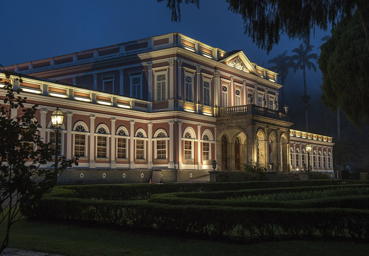
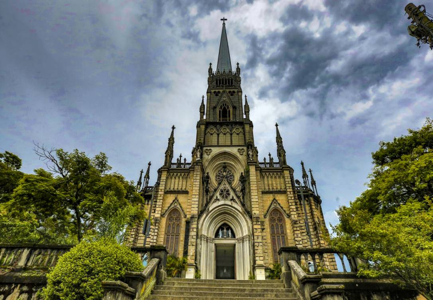

-
A Cidade Imperial do Rio de Janeiro e seu Patrimônio Histórico
.svg)
Não há dúvida de que Petrópolis é um dos destinos mais encantadores do Brasil e um lugar que atrai visitantes durante todo o ano. Mas você já se perguntou por que tantos turistas sonham em conhecer essa cidade histórica pelo menos uma vez na vida?
Situada nas montanhas da Serra do Rio de Janeiro, Petrópolis oferece uma combinação única de cultura, história e belezas naturais que cativam viajantes de todos os estilos. Desde o charme de suas construções imperiais até as trilhas que levam a vistas deslumbrantes, a cidade é um verdadeiro convite a explorar e relaxar. Agora, vamos mergulhar nas experiências e nos lugares especiais que fazem de Petrópolis um destino imperdível na lista de desejos de muitos. -
Museu Imperial
Um dos principais atrativos de Petrópolis é o Museu Imperial, que abriga um acervo fascinante da era imperial brasileira. A visita ao palácio, com seus jardins exuberantes e arquitetura neoclássica, transporta os visitantes para o século XIX. Além disso, as ruas arborizadas da cidade, repletas de lojas e cafés, proporcionam um ambiente acolhedor e charmoso, perfeito para passeios tranquilos.
 -
O Parque Nacional da Serra dos Órgãos
Para os amantes da natureza, as montanhas ao redor oferecem trilhas e cachoeiras que prometem aventuras inesquecíveis. O Parque Nacional da Serra dos Órgãos, nas proximidades, é um paraíso para os amantes de hiking e escaladas, com paisagens que deslumbram a cada passo. Petrópolis é, sem dúvida, um lugar onde a história e a natureza se encontram, criando experiências memoráveis para todos os tipos de viajantes.
-
Catedral São Pedro de Alcântara
A Catedral de São Pedro de Alcântara, situada no bairro do Centro, é um dos principais marcos de Petrópolis e um exemplo impressionante da arquitetura gótica no Brasil. Inaugurada em 1933, a catedral é dedicada ao padroeiro da cidade e possui uma belíssima fachada de pedras, com vitrais que contam a história da vida de São Pedro. Seu interior é igualmente deslumbrante, com detalhes em madeira e uma atmosfera serena que atrai tanto os fiéis quanto os turistas. Além de ser um importante local de culto, a catedral abriga os túmulos de membros da família imperial brasileira, incluindo Dom Pedro II e a imperatriz Teresa Cristina, tornando-a um elo vital com a rica história da cidade.
 -
Palácio Imperial de Petrópolis
A família imperial brasileira morava principalmente no Palácio Imperial de Petrópolis, que servia como residência de verão. Inaugurado em 1847, o palácio foi projetado para ser um refúgio da família real, longe do calor do Rio de Janeiro. O edifício, com sua arquitetura neoclássica e jardins bem cuidados, é hoje o Museu Imperial, onde estão expostos muitos objetos e documentos da era imperial.Além do Palácio, a família imperial também tinha outras propriedades na região, mas o Palácio de Petrópolis foi o principal local de residência durante o período imperial.

-
O Vale da Lua
O Vale da Lua, localizado em Itaipava, é uma impressionante atração natural famosa por suas formações rochosas únicas que lembram crateras lunares, esculpidas pela ação da água ao longo dos anos. Esse cenário deslumbrante oferece trilhas para caminhadas, áreas para banho em rios e cachoeiras, proporcionando um contato profundo com a natureza. A vegetação exuberante e as águas cristalinas criam um ambiente perfeito para fotos e momentos de tranquilidade, tornando o Vale da Lua um destino imperdível para os amantes de ecoturismo e beleza natural.